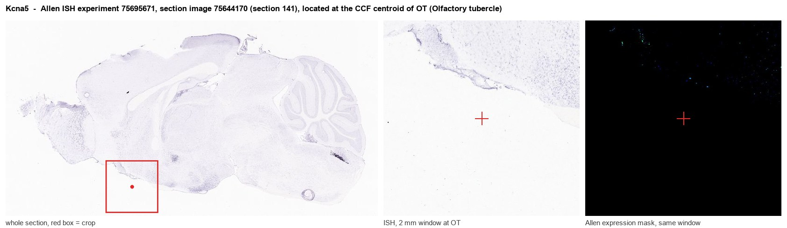
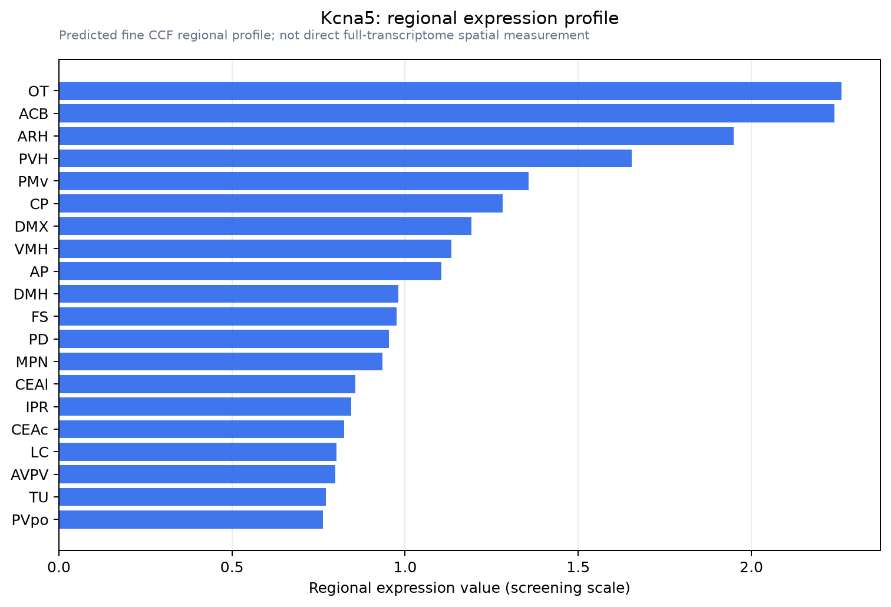

Kcna5
Potassium voltage-gated channel subfamily A member 5 (Voltage-gated potassium channel subunit Kv1.5) (KV1-5)
Spatial tier: RESTRICTED · Class: ION_CHANNEL · Top region: OT (Olfactory tubercle) · Positive regions: 28/554
43.7Discovery Score
40.3Targetability Score
CEvidence grade C
What this means: Kcna5: fine CCF profile is restricted toward OT (top regions: OT, ACB, ARH, PVH, PMv; 28 positive regions); direct spatial validation is still required.
Function in OT: evidence, prediction, innovation
- Gene function
- Kcna5 encodes Kv1.5, a Shaker-family voltage-gated potassium channel subunit carrying the ultrarapid delayed-rectifier current IKur. It is best known in atrial myocytes and pulmonary artery smooth muscle, where it sets repolarisation and resting potential, and can heteromultimerise with other Kv1 subunits in neurons.
- Region function
- The olfactory tubercle is the olfactory ventral striatum, converting mitral/tufted cell odour input and VTA dopamine into reward- and hedonics-related output through D1 and D2 medium spiny neurons.
- Published in this region
- inferred No region-specific literature found. The closest evidence is Kv1.5 protein in CNS neurons elsewhere: Chung et al. 2001 found strong Kv1.5 immunoreactivity in Purkinje somatodendritic compartments and deep cerebellar output neurons, and Matus-Leibovitch et al. 1996 showed spinal motor neurons are enriched in Kv1.5 mRNA and protein; no report places Kv1.5 in olfactory tubercle or any striatal territory.
- Predicted function
- Prediction: if enriched in OT, Kv1.5 most plausibly carries a sustained delayed-rectifier conductance in medium spiny neurons, limiting repetitive firing and setting up-state firing gain; alternatively it sits in OT vasculature or astrocytes, given its strong smooth-muscle expression. Neuronal localisation predicts that DPO-1 class block or Kcna5 deletion raises MSN excitability and exaggerates odour-cued approach; vascular localisation predicts altered OT perfusion instead. Cell-type assignment must come first.
- Innovation
- ★★★★★ 5/5 Kv1.5 is barely studied in CNS outside cerebellum and spinal cord and not at all in ventral striatum, despite being readily drugged.
- Tools
- Selective IKur/Kv1.5 blockers of the DPO-1 class (Lagrutta et al. 2006) and low-micromolar 4-aminopyridine; Kcna5-null mice from the cardiac field; Kv1.5 antibodies validated in cerebellum and spinal cord; OT cell types targetable with Drd1-Cre and Adora2a-Cre.
- References
Direct evidence located at the region

Allen ISH experiment 75695671, section image 75644170 (section 141): the section that contains the CCF centroid of Olfactory tubercle according to the Allen image-to-atlas alignment (reference_to_image), with a 2 mm window around that point. Left: whole section, red box = window. Middle: ISH signal. Right: Allen's expression-mask view of the same window. open this image in the Allen viewer
Look it up yourself: Allen Mouse Brain ISH for Kcna5Allen reference atlas: OT (structure 754)ABC Atlas MERFISH viewer(in the ABC Atlas choose dataset MERFISH-C57BL6J-638850-CCF, colour cells by gene "Kcna5" or by parcellation_substructure "OT")All genes confined to OT + 3-D brain
Direct spatial evidence
MERFISH REGION LOCATOR

Regional expression figure

Predicted WMB × fine-CCF profile; not direct full-transcriptome spatial measurement.
Spatial profile
Evidence and specificity
- Evidence status
- PREDICTED_FINE
- Direct sources
- None; predicted localization only
- Exclusive threshold
- 12 positive regions out of 554
- Spatial specificity
- 0.310
- Top-region fraction
- 0.055
- Filter status
- PASS
Interpretation limits
- Cell-type-to-region projection is imputed expression, not direct spatial measurement.
- Adult reference atlases do not establish stability across age, sex, strain, state, or disease.
- Transcript abundance does not guarantee protein abundance or genetic-tool performance.